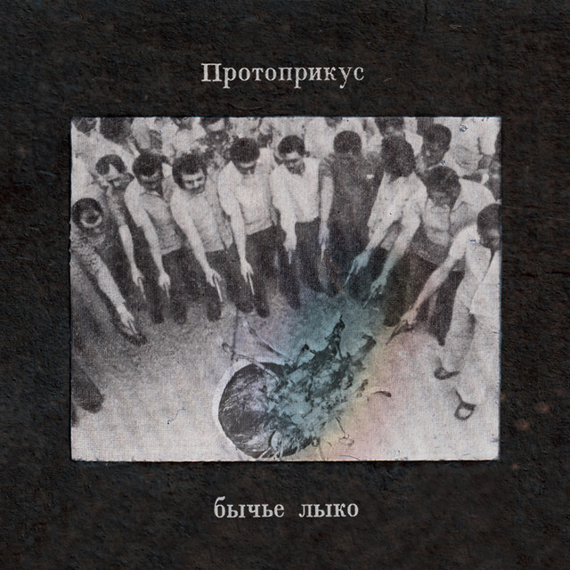

YoPlayer
Локальный Hi-Res плеер
USB ЦАП Bit-Perfect • Встроенный Soulseek • Тексты
FLAC 24-bit
USB ЦАП
Soulseek
Онлайн-тексты • Синхронизация
Встроенный Soulseek • Загрузка FLAC
18:34:09
Бычье Л...
LTE
56
Бычье Лыко
Протоприкус

Протоприкус
бычье лыко
18:03
24-bit • 44.1 kHz • 924 kbps • FLAC
20:39
18:44:00
Бычье Л...
LTE
52
Бычье Лыко
Протоприкус
Приуныли, ждём развязки
— Алё? Пару дней на всё
— Кто ответственность несёт?
Сколько раз мы их искали
Всё напрасно — мы устали
— Пару дней на всё
Ни одна служба не спасёт
Преобладает метод тыка
Расцветает бычье лыко
Синхронизир
ованный
ованный
Статический
18:45:12
Soulseek
LTE
52
In Rainbows flac
Soulseek подключён
По альбомам • Свободные слоты
Radiohead - In Rainbows
10 тр. • 312.5 MB • 3.8 MB/s
FLAC • 24bit/96kHz
In Rainbows (Disk 2)
8 тр. • 218.0 MB • 2.4 MB/s
FLAC • 16bit/44.1kHz
04 Weird Fishes.flac
0%
3.8 MB/s • Music/YoPlayer
Главная
Поиск
Медиатека
Никаких подписок.
Только твоя медиатека.
YoPlayer
FLAC • USB ЦАП • Soulseek • 0 рекламы
rdkgl.github.io/YoPlayer
GitHub: RDKGL/YoPlayer